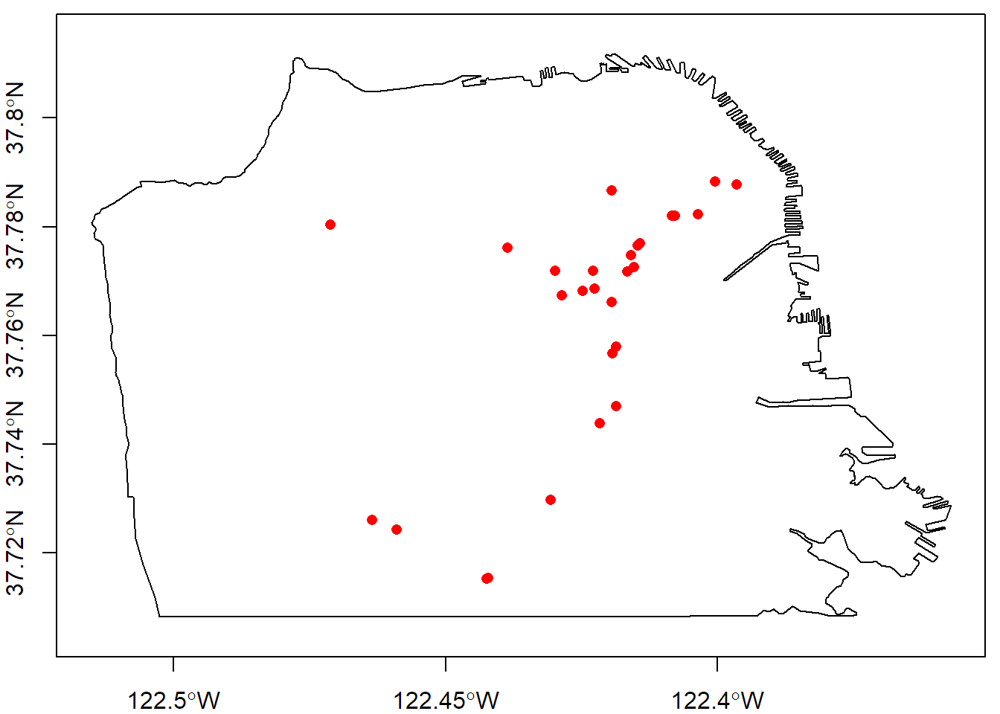
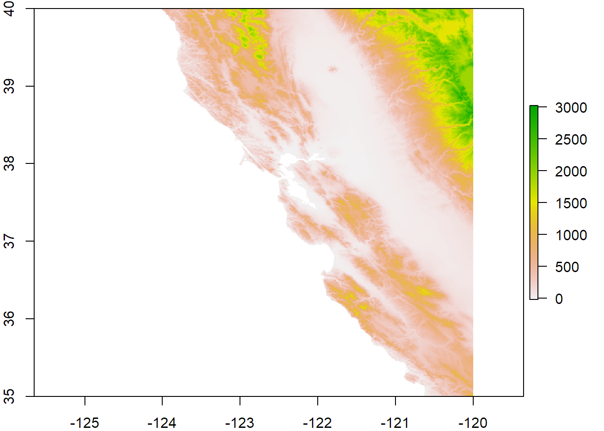
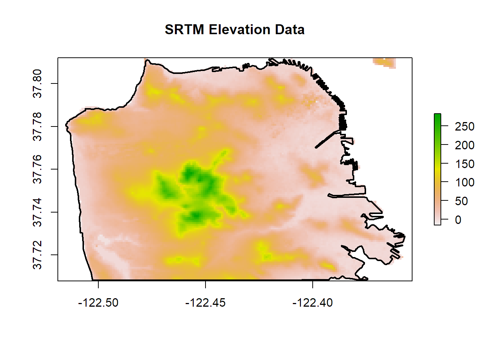
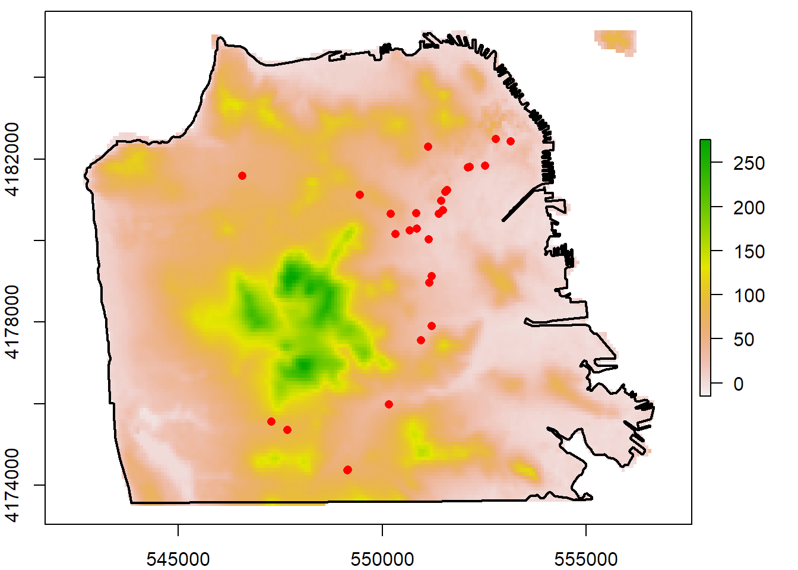
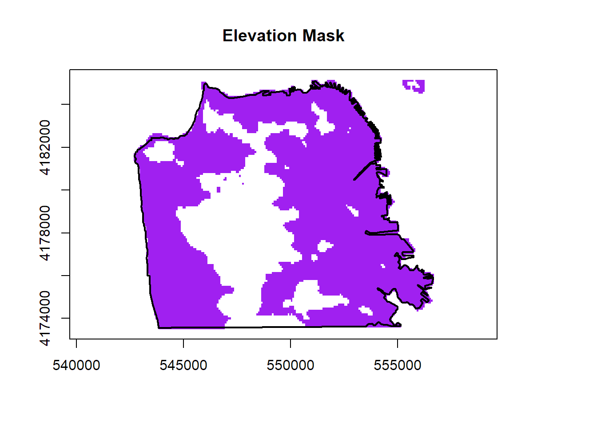
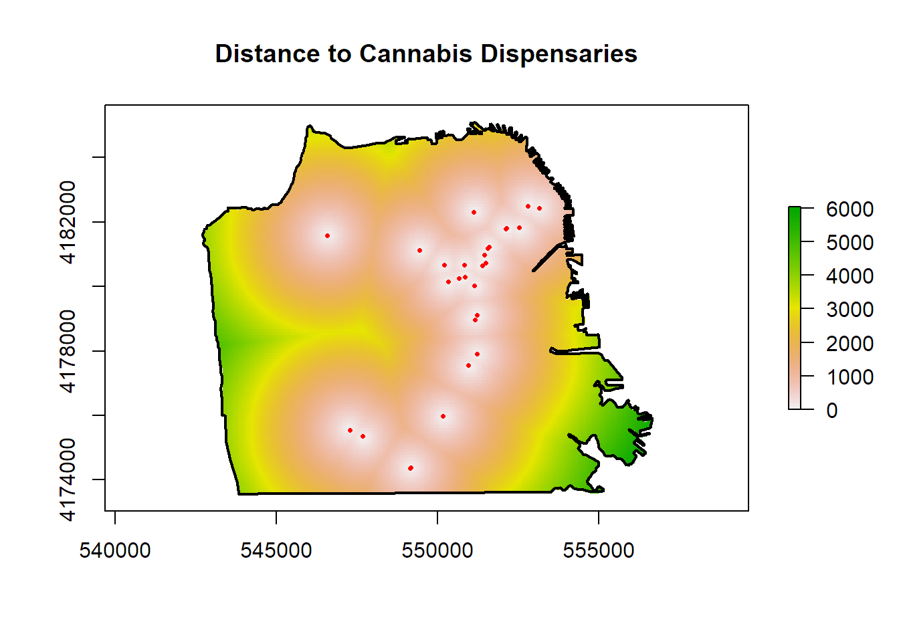
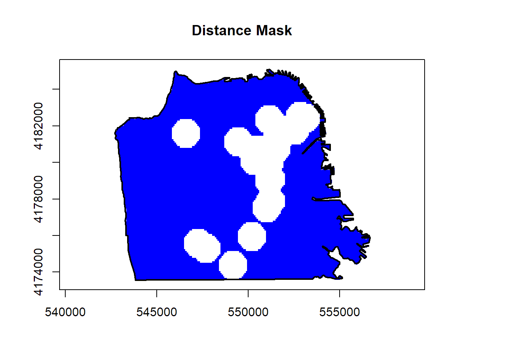
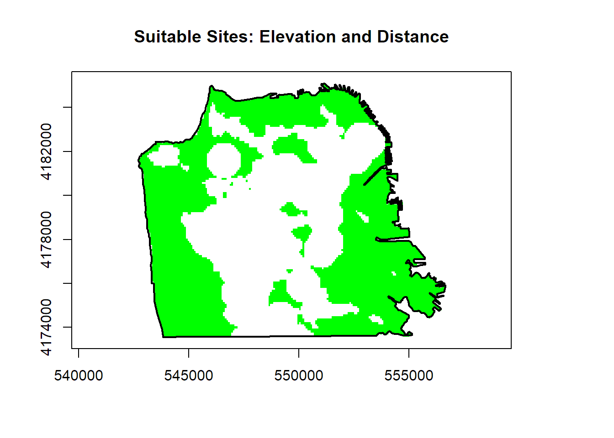
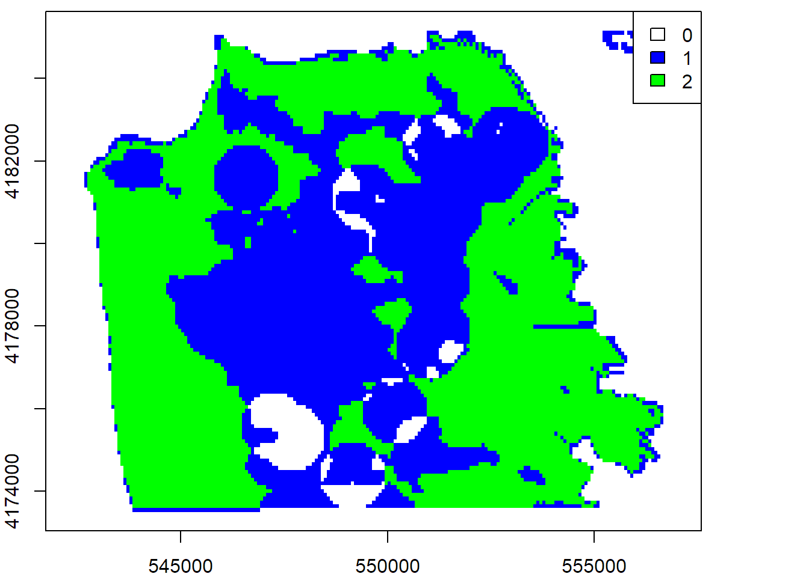

Download the GitHub repo.
Create a new R script in RStudio (File → New File → R Script).
Copy the questions below (all of which begin with the # character so RStudio will interpret them as a comment) into your script. Under each question, write R code. Run each line of R code as you enter it (press the Run button or ctrl+enter) to make sure it works.
Remember to save your script periodically to avoid losing work if RStudio crashes.
If you get stuck, click on the 'hint' link, or the question number to see the answer. Click again to hide.
If you have any questions or problems, please feel free to email the instructor.
# In this exercise, we will identify suitable locations for new a cannabis
# dispensary in San Francisco based on two spatial criteria: 1) the new site
# should not be within 1/2 mile of an existing dispensary, and 2) the elevation
# should be < 250 ft above sea level.
########################################################################
#### IMPORT THE SF CITY BOUNDARY AND LICENSED CANNABIS DISPENSARIES ####
########################################################################
# 1. Import the San Francisco City Boundary Shapefile, sf_bnd.shp
library(rgdal)
sfbnd_ll <- rgdal::readOGR("../exercises/data", "sf_bnd")## OGR data source with driver: ESRI Shapefile
## Source: "../exercises/data", layer: "sf_bnd"
## with 1 features
## It has 9 fieldssfbnd_ll <- sp::geometry(sfbnd_ll)
summary(sfbnd_ll)## Object of class SpatialPolygons
## Coordinates:
## min max
## x -122.51513 -122.35702
## y 37.70825 37.81176
## Is projected: FALSE
## proj4string :
## [+proj=longlat +datum=NAD83 +no_defs +ellps=GRS80 +towgs84=0,0,0]# 2. Import the 2014 Licensed Cannabis Dispensaries in
# sf_permitted_cannabis_dispensaries_2014.kml.
kml_fn <- "data/sf_permitted_cannabis_dispensaries_2014.kml"
file.exists(kml_fn)## [1] TRUErgdal::ogrListLayers(kml_fn)## [1] "Cannabis Dispensaries 2014"
## attr(,"driver")
## [1] "KML"
## attr(,"nlayers")
## [1] 1cannabis_pts_ll <- rgdal::readOGR(kml_fn, "Cannabis Dispensaries 2014", pointDropZ=TRUE)## OGR data source with driver: KML
## Source: "data/sf_permitted_cannabis_dispensaries_2014.kml", layer: "Cannabis Dispensaries 2014"
## with 28 features
## It has 2 fieldscannabis_pts_ll <- geometry(cannabis_pts_ll)
summary(cannabis_pts_ll)## Object of class SpatialPoints
## Coordinates:
## min max
## coords.x1 -122.47113 -122.39641
## coords.x2 37.71518 37.78823
## Is projected: FALSE
## proj4string :
## [+proj=longlat +datum=WGS84 +no_defs +ellps=WGS84 +towgs84=0,0,0]
## Number of points: 28# 3. Plot the cannabis dispensaries on top of the city boundary.
plot(sfbnd_ll, axes=TRUE, asp=1)
plot(cannabis_pts_ll, add=TRUE, col="red", pch=16)
##################################
#### CREATE AN ELEVATION MASK ####
##################################
# 4. Download the SRTM data for San Francisco.
library(raster)
ca_dem_ll <- raster::getData('SRTM', lon=-122.5, lat=37.8, download=TRUE)
plot(ca_dem_ll, asp=1)
# 5. Crop the DEM to the SF boundary.
sf_dem_ll <- crop(ca_dem_ll, sfbnd_ll)
plot(sf_dem_ll, asp=1, main="SRTM Elevation Data")
plot(sfbnd_ll, add=TRUE, lwd=2)
# 6. Project the DEM, city boundary, and pot dispensary locations to UTM, so we can
# create buffers in meters.
utm10n_crs <- CRS("+proj=utm +zone=10 +ellps=WGS84")
sfbnd_prj <- sp::spTransform(sfbnd_ll, utm10n_crs)
cannabis_pts_prj <- sp::spTransform(cannabis_pts_ll, utm10n_crs)
sf_dem_prj <- raster::projectRaster(sf_dem_ll, crs=utm10n_crs)
plot(sf_dem_prj, axes=TRUE, asp=1)
plot(sfbnd_prj, add=TRUE, lwd=2)
plot(cannabis_pts_prj, add=TRUE, col="red", pch=16)
# 7. Create the elevation mask
sfelev_mask <- raster(sf_dem_prj)
sfelev_mask[ getValues(sf_dem_prj) < 250 * 0.3048 ] <- 1
plot(sfelev_mask, col="purple", asp=1, main="Elevation Mask", legend=FALSE)
plot(sfbnd_prj, add=TRUE, lwd=2)
################################
#### CREATE A DISTANCE MASK ####
################################
# 8. Using the DEM as a raster template, create a distance surface from the cannabis
# dispensaries.
cannabis_pts_rst <- raster::rasterize(cannabis_pts_prj, sf_dem_prj, field=1)
cannabis_dist2pts <- raster::distance(cannabis_pts_rst)
cannabis_dist2pts <- mask(cannabis_dist2pts, sfbnd_prj)
plot(cannabis_dist2pts, main="Distance to Cannabis Dispensaries")
plot(sfbnd_prj, add=TRUE, lwd=2)
plot(cannabis_pts_prj, add=TRUE, col="red", pch=16, cex=0.5)
# 9. Create a raster mask of all areas more than half a mile from an existing pot
# dispensary.
cannabis_distmask <- raster(cannabis_dist2pts)
cannabis_distmask[ getValues(cannabis_dist2pts) > 1610 / 2 ] <- 1
plot(cannabis_distmask, col="blue", asp=1, main="Distance Mask", legend=FALSE)
plot(sfbnd_prj, add=TRUE, lwd=2)
#################################
#### IDENTIFY SUITABLE SITES ####
#################################
# 10. Use a raster algebra expression to identify sites that meet both criteria.
good_sites <- cannabis_distmask * sfelev_mask
plot(good_sites, col="green", asp=1, main="Suitable Sites: Elevation and Distance", legend=FALSE)
plot(sfbnd_prj, add=TRUE, lwd=2)
# 11. Bonus: create an additive site suitability model where the pixel values are the
# number of conditions that are met (0..2).
## First turn the NA values to 0s
cannabis_distmask[is.na(getValues(cannabis_distmask))] <- 0
sfelev_mask[is.na(getValues(sfelev_mask))] <- 0
## Add the raster masks together
good_better_sites <- cannabis_distmask + sfelev_mask
cols <- c(NA, "blue", "green")
plot(good_better_sites, legend = FALSE, col = cols)
legend("topright", legend = c("0", "1", "2"), fill = cols)